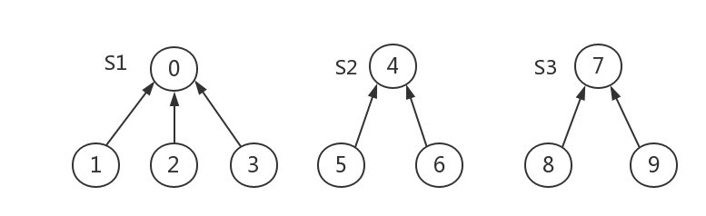
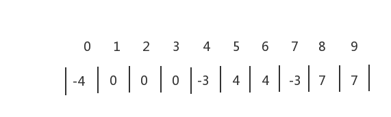
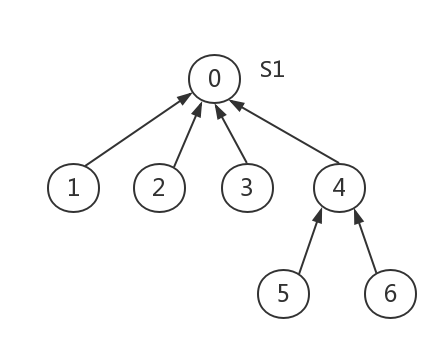
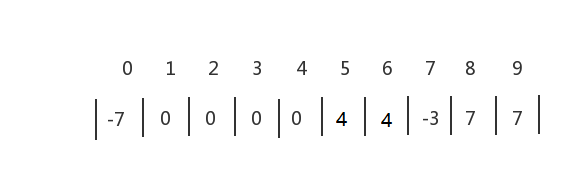
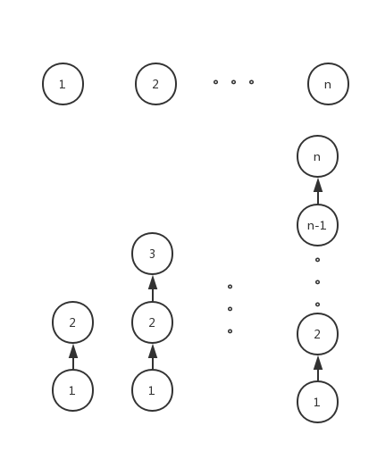

并查集
并查集介绍
并查集是一种树型的数据结构，用于处理一些不相交集合（Disjoint Sets）的合并及查询问题。常常在使用中以森林来表示。每个子集合以一颗树表示，所有表示子集合的树，构成表示全集合的森林存放在双亲表示数组内。数组元素下标代表元素名，根节点的双亲为负数，它的绝对值为该棵树内的结点个数。
并查集支持以下两种操作
- Merge(Root1,Root2) ：若Root1与Root2不相交则将两根结点合并。
- Find(x) :查找x元素所在的集合的根节点。
实现步骤
假设有如下三棵树

它们的存储结构为

为了得到两个子集合的并，只要将其中一个子集合的根结点的双亲指针指向另一个集合的根节点即可。
执行一次S1与S2合并操作后

它们的存储数组变为

下面给出一般的并查集C语言实现代码
1 | #include <stdio.h> |
测试结果
1 | 第0个结点的根节点为:0 |
算法分析
Merge合并操作的时间复杂度为$O(1)$
Find查找操作的时间复杂度为$O(d)$其中d为树的深度。
总的时间复杂度为线性$O(n)$。
如果合并算法不改进(我这种合并算法是改进过的)，假设每次都是含成员多的根节点指向了含成员少的根节点(如下图所示)，则最后树的深度为n。并查集算法全部操作的时间就是$O(n^2)$了。

并查集的应用：求无向图的连通分量个数，最近公共祖先（LCA），带限制的作业排序，实现Kruskar算法求最小生成树等
Kruskal算法并查集实现
上一篇写最小生成树，Kruskal算法没有给代码
今天学完了并查集，才能实现Kruskal算法。
还以上一篇文章的题目为例。
给出C语言代码
1 | #include <stdio.h> |
输出结果
1 | {0,2} 1 |
这里留个坑，数据读入排序我直接用了stdlib头文件里的qsort函数，其实如果用堆排序来建立边的顺序的话每次选择最小边的时间复杂度仅为$O({log}_2e)$(e为边的个数),总的时间复杂度为$O(e{log}_2e)$